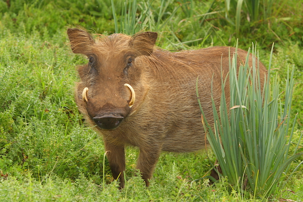

WARTHOGS
Warthogs are sturdy mammals of the family Suidae and the order Artiodactyla. Two species are traditionally recognised, the common warthog (Phacochoerus africanus) and the desert warthog (Phacochoerus aethiopicus), with genetic evidence dividing them into distinct regional subspecies. Warthogs are scattered throughout sub-Saharan Africa, favoring open and semi-arid regions. Suidae is the family of pigs; other, still surviving, members of the family include wild boars, bushpigs, and babirusas. Adult male warthogs are larger than females and can reach a shoulder height of 0.85 m (2.8 ft) and weigh up to 150 kg (330 lb).
All warthogs have several distinctive features, the most notable of which is a pair of facial warts or pads, used as protective cushions for their eyes and jaws during territorial fights. Their canine teeth grow into long, curved tusks, which serve as formidable weapons against predators and as tools for digging up roots. Warthogs' large, mobile ears and keen sense of smell help them detect danger early. Their thin coats and habit of wallowing in mud help to control their body temperature. Common warthogs have functional incisors and slightly longer faces, while desert warthogs lack upper incisors and have more hooked tufted ears.
Warthogs are omnivorous grazers and can be found in different habitats including savannahs, open woodlands, grasslands, and semi-deserts. They prefer to stay near water sources and often occupy abandoned aardvark burrows for safety.
WHERE WILL YOU FIND THEM
You will find the warthogs at pen W07, right next to the watering hole exhibit.